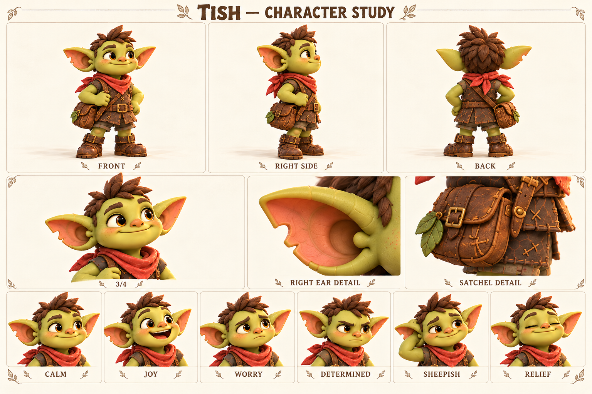
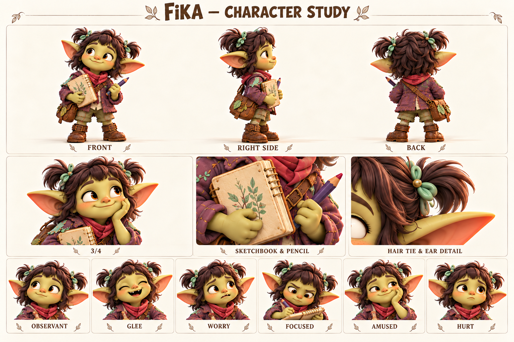
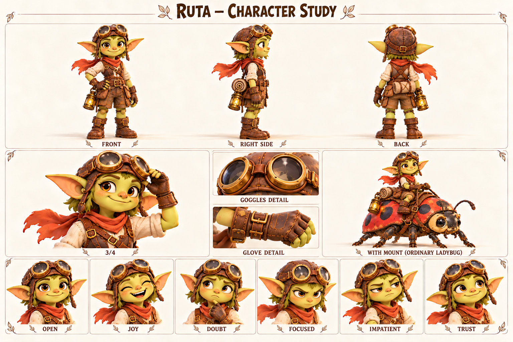

Персонажи в деталях
16 досье · 16 визуальных листов · 96 эмоциональных портретов
Ракурсы и детали внешности, история, желания и страхи, отношения, голос и примеры поведения в сценах.
Показано 16 из 16

Тиш / Tish
Всегда делает первый шаг и постепенно учится оставлять рядом место для чужого.
Открыть досье →
Лума / Jo
Умеет находить дорогу по мелочам и учится оставлять в своих планах место непредвиденному.
Открыть досье →
Бум / Boom
Способен удержать тяжёлое и учится не держать все трудности в одиночку.
Открыть досье →
Царап / Scratchy
Превращает любую встречу в игру, потому что больше всего хочет, чтобы встреча продолжилась.
Открыть досье →
Пип / Pip
Хочет первым сделать открытие и учится отличать догадку от того, что действительно увидел.
Открыть досье →
Фика / Fika
Замечает то, мимо чего пробегают другие, и учится показывать незаконченные мысли.
Открыть досье →
Мира / Mira
Умеет находить место для каждого и учится оставлять место для себя.
Открыть досье →
Уна / Una
Слышит настроение места и учится быть услышанной самой.
Открыть досье →
Корень / Koren
Помнит, как сделана каждая вещь, и учится доверять тем, кто сделает следующую.
Открыть досье →
Шал / Shal
Не спорит с течением, но должен научиться вовремя говорить людям о том, что заметил.
Открыть досье →
Рыж / Ryzh
Хочет, чтобы его замечали первым, и учится оставаться заметным после поражения.
Открыть досье →
Клоч / Kloch
Собирает блестящие вещи и учится замечать историю их владельцев.
Открыть досье →
Жук-коряжник / Bark
Живёт в собственном медленном ритме и может договориться с теми, кто этот ритм заметит.
Открыть досье →
Кусь / Kus
Исследует мир зубами и учится отпускать вещь, не боясь потерять связь.
Открыть досье →
Пятнышко / Speckle
Стала тяжелее, но осталась той же любопытной подругой; заново учится доверять опоре.
Открыть досье →
Рута / Ruta
Умеет добираться куда угодно и учится оставаться там, где её ждут.
Открыть досье →Совпадений нет. Попробуйте другое имя.